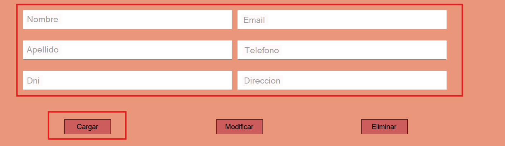
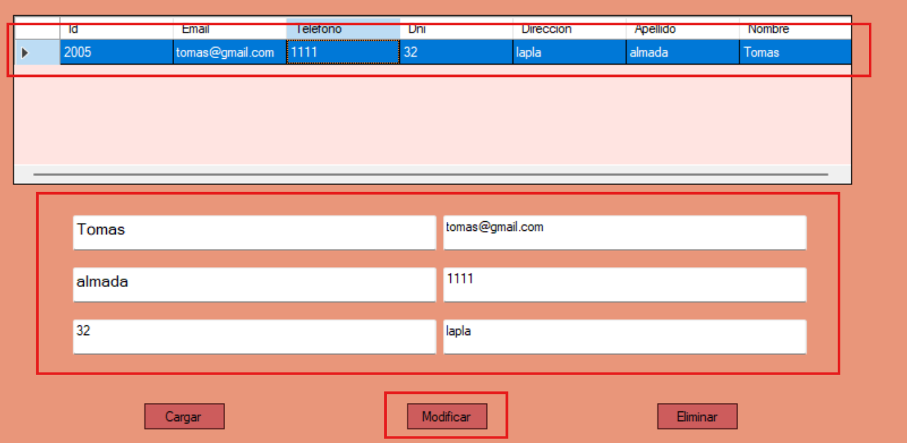
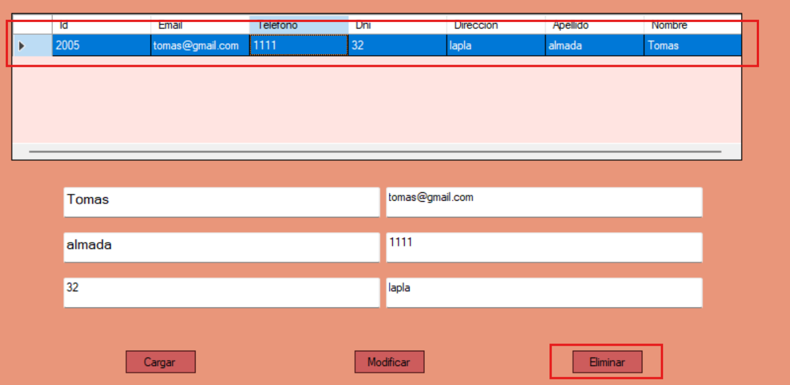

Ayuda: Registrar Cliente
La pantalla de Registrar Cliente permite al usuario cargar un nuevo cliente, modificarlo o eliminarlo del sistema. Tambien se pueden serializar los datos de los clientes en xml
Guia paso a paso
Siga estos pasos para crear a un cliente:
- Complete los datos requeridos en el formulario que aparece.
- Nombre
- Apellido
- Dni
- Email
- Telefono
- Direccion
- Haga clic en "Cargar" para registrar a un nuevo cliente.

Para modificar a uno ya existente:
- Seleccione a un cliente desde la tabla.
- Modifique aquellos parametros que quiera modificar del cliente.
- Haga clic en "Modificar" para modificar a un cliente.

Para eliminar a un cliente:
- Seleccione a un cliente desde la tabla.
- Haga clic en "Eliminar" para eliminarlo.

Notas adicionales
Recuerde que solo los usuarios con permisos adecuados pueden gestionar algunas acciones.